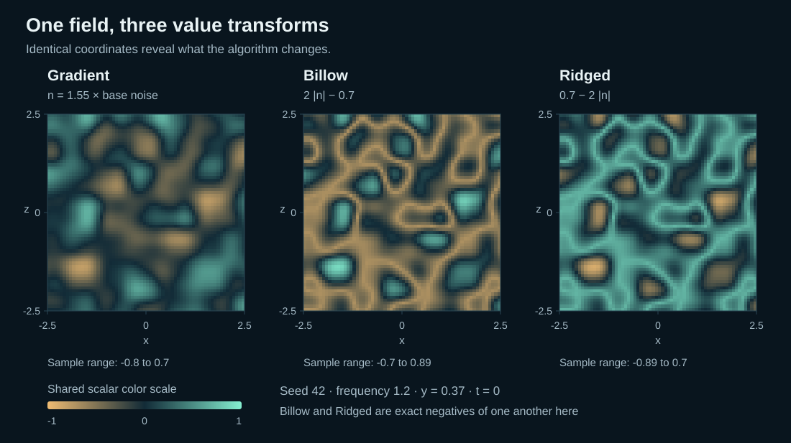
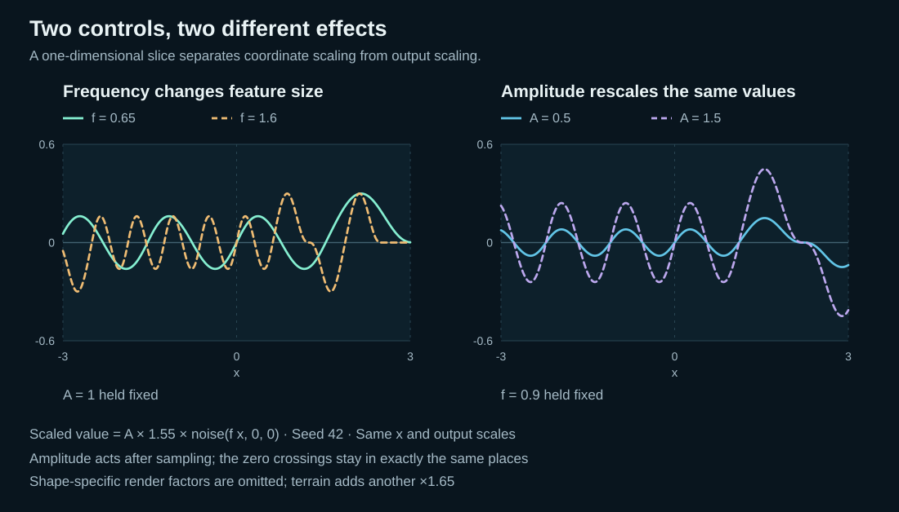
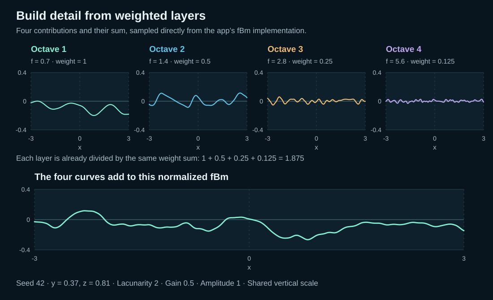
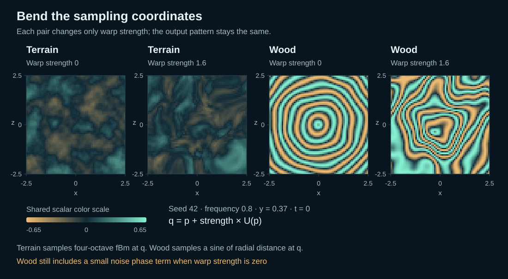
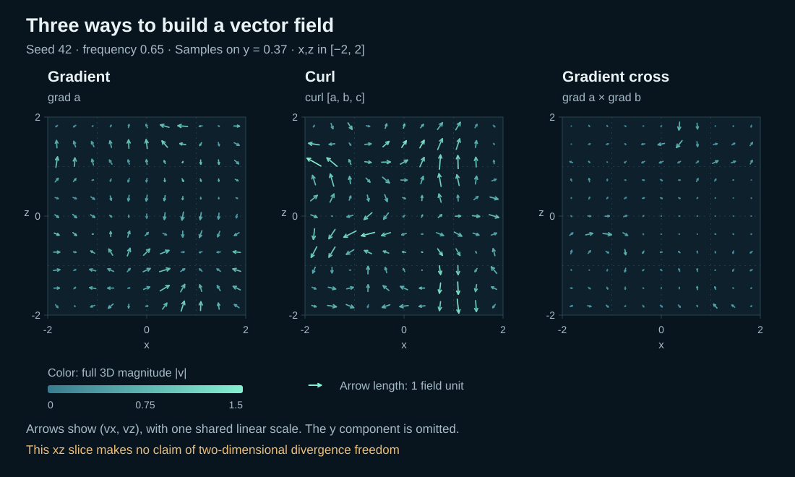
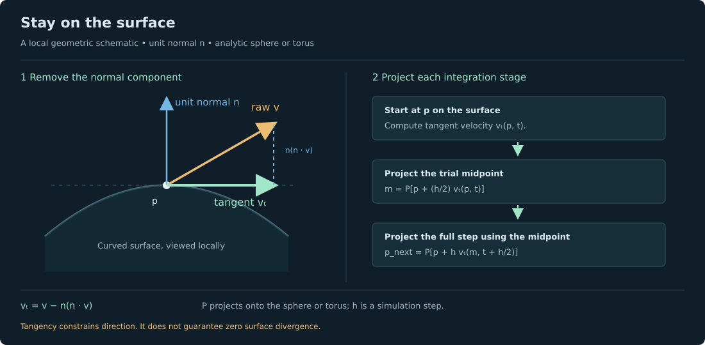
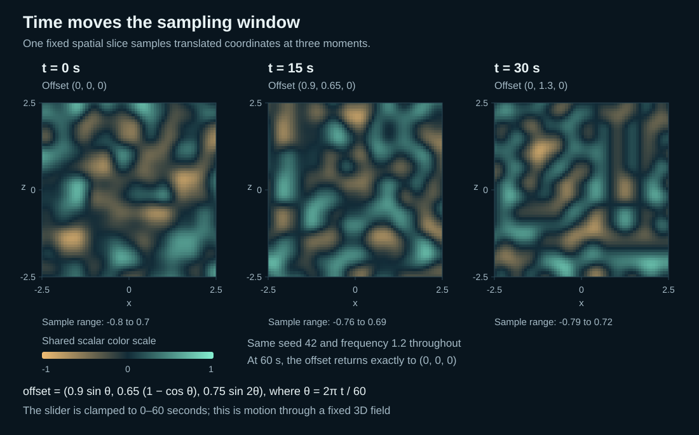

Noise
Gradient noise produces a scalar: one number at a position. Billow and Ridged reshape that same number.
Learn by comparing
One smooth function can become a landscape, a folded pattern, or a moving current. These diagrams explain what each experiment computes, what its controls change, and where the model stops.
Gradient noise produces a scalar: one number at a position. Billow and Ridged reshape that same number.
Several scales of the base field are weighted and added. No new random generator is required.
Noise bends the sampling coordinates. Wood adds a periodic radial pattern.
Spatial derivatives turn scalar or vector potentials into directions that particles can follow.
This guide covers the current app. It does not include cellular/Voronoi noise, Simplex noise, libnoise’s full RidgedMulti algorithm, or a physically simulated fluid.
Scalar values
Imagine a repeatable landscape defined everywhere in space. Ask for a value at one point, then move a little: the answer changes smoothly. A seed chooses the arrangement; it does not add a new random value each frame.
The base function assigns a gradient direction to each integer lattice corner. Inside a cell, it blends the corner dot products with a smooth quintic curve. This is a seeded, Perlin-style gradient-noise implementation with twelve unit-length gradients. It repeats every 256 units along each base-noise coordinate axis.

n(p) = 1.55 N(f p)
Gradient = n · Billow = 2|n| − 0.7 · Ridged = 0.7 − 2|n|Good for smooth hills, texture variation and displacement. Positive and negative values vary continuously. The sampled values are not guaranteed to span exactly −1 to +1.
Emphasizes rounded lobes separated by creases. Useful for stylized cloud-like or rocky structure. The absolute value introduces a derivative kink where the original field crosses zero.
Turns those zero crossings into high ridges. Useful for stylized mountain chains or veins. Here it is exactly the negative of Billow, not a multi-octave, feedback-weighted ridged algorithm.
In Noise, pause and reset time. Keep the seed fixed. Switch Gradient → Billow → Ridged without changing frequency or amplitude. The creases correspond to the original field’s zero crossings.
For a fractional cell coordinate u, the fade is 6u⁵ − 15u⁴ + 10u³. Its first and second derivatives vanish at both ends, helping the interpolation join smoothly across cell boundaries. The twelve directions are the permutations of (±1, ±1, 0), divided by √2. This project uses its own seeded permutation and scaling, so it is not a bit-exact copy of another implementation.
Read one control at a time
Frequency multiplies the input coordinates before sampling. A larger value packs more variation into the same visible space. Amplitude scales the geometric displacement after the scalar value has been computed; it does not change the scalar’s pattern.

The renderer uses shape-specific scale factors: terrain height is 1.65 × amplitude × value; sphere displacement is 0.50 × amplitude × value; torus displacement is 0.25 × amplitude × value. Curved shapes move along their base-surface normal. Before animation, terrain samples (0.65X, 0.371, 0.65Z); sphere and torus sample 0.65(X,Y,Z). The animation offset is then added to these sample coordinates.
These display factors are not part of the noise algorithm. Very fine features can alias on a finite mesh. Fine quality adds samples, but cannot resolve unlimited frequency or octave detail.
Weighted composition
Begin with broad hills. Add a weaker field with smaller features. Repeat. The result resembles a more detailed landscape while remaining deterministic. The app’s fBm is a finite weighted sum of gradient noise, not an exact stochastic fractional Brownian process.

F(p) = Σᵢ₌₀ᴷ⁻¹ gⁱ N(f λⁱ p) / Σᵢ₌₀ᴷ⁻¹ gⁱDividing by the sum of weights keeps the overall amplitude scale comparable. It does not guarantee constant variance, constant gradient magnitude or identical peak heights. Unlike the Noise tab, the Octaves tab uses the unscaled base N, without Noise’s 1.55 factor.
Choose Octaves, pause, reset time and start at one layer. Increase to five with gain 0.5 and lacunarity 2. Then hold five layers and raise gain to 0.8. The fine detail becomes more influential. Use wireframe to notice when the mesh cannot resolve it.
Useful for multiscale terrain and material variation. This finite, unfiltered sum is not a guarantee of natural erosion, scale invariance, or alias-free rendering.
Change where you look
Ordinary displacement changes the output height. Domain warping changes the position used to ask for that output. A three-component noise field bends the coordinates first, so otherwise simple patterns stretch and curl.
q = p + w W(p)
Warped terrain = fBm₄(q; frequency = f, lacunarity = 2, gain = 0.5)
Warp strength w controls the coordinate offset. The warp channels themselves use fixed frequency 0.65, so the visible Frequency control changes the final pattern, not this internal warp frequency. The terrain branch always uses four layers; the Octaves tab’s layer count is not applied here.
Concentric rings arise from a sine wave of radial distance r = √(qₓ² + q_z²) around the y-axis. A small noise term modulates their phase, and the coordinate warp bends the rings.
Wood(p) = 0.65 sin[4π(f √(qₓ² + q_z²) + 0.25 N(f q))]Even at zero warp, Wood retains its small grain modulation. It is a stylized periodic pattern, not tree growth or a scanned wood texture. Warping is also not guaranteed to be invertible: strong distortion can fold space and create dense, hard-to-resolve details.
Choose Warp and set strength to zero. Raise it while keeping frequency fixed. Repeat with Wood rings. At a paused time, switch terrain/sphere/torus to see how one 3D pattern intersects different shapes.
With N₀ seeded by s, N₁ by s + 1013, and N₂ by s + 2029:
Wₓ(p) = N₀(0.65p + (17, 0, 0))
Wᵧ(p) = N₁(0.65p + (0, 31, 0))
W_z(p) = N₂(0.65p + (0, 0, 9))These offsets and seed changes produce different channels; they are not claims of statistical independence.
Direction and speed
A scalar gives one value. A vector gives three components: a direction and a magnitude. Flow builds vectors from smooth noise potentials, then uses those vectors as particle velocities.

The direction of steepest local increase. Its magnitude measures how rapidly a changes with distance. In a static gradient field, particles tend toward local maxima; animated potentials can move those maxima. This field is not generally divergence-free.
A three-component potential A produces rotational structure. For a sufficiently smooth potential, the analytic divergence of its curl is zero. Individual paths need not be closed loops.
Perpendicular to both scalar gradients. In a static analytic field, paths lie along intersections of level surfaces. Parallel or zero gradients give zero cross product.
For smooth a and b, the analytic gradient-cross construction is also divergence-free. That statement does not transfer unchanged to the app’s approximations, normalized velocities, boundary resets, or surface projection.
Select Flow → Volume. Compare Gradient, Curl and Gradient cross with the same seed and frequency. Pause to inspect arrows; resume to see paths. Increase arrow density for spatial sampling, and trail length for more history. These display controls do not add physical accuracy.
The app constructs a = N₀(fp + (2.1, 8.3, 4.7)), b = N₁(fp + (5.1, 1.3, 9.7)), and c = N₂(fp + (7.1, 3.3, 1.7)). Curl uses A = (a, b, c).
∇ × A = (∂c/∂y − ∂b/∂z,
∂a/∂z − ∂c/∂x,
∂b/∂x − ∂a/∂y)Derivatives are with respect to world-sampling coordinates, so changing frequency also changes derivative magnitudes. The field is a procedural velocity model, not a solver of pressure, viscosity or conservation laws.
Constrain the motion
In Flow, choose Sphere or Torus to keep particles on a smooth, undeformed surface. At a point p with unit normal n, remove the part of the ambient vector that points through the surface.
vₜ = v − n(n · v) ⇒ n · vₜ = 0
The sphere has radius 2.45. The torus wraps around the y-axis with major radius 2 and tube radius 0.75. Integration stores Cartesian coordinates, avoiding longitude seams and latitude-pole charts. Each step projects its trial midpoint and final point back to the surface.
Projection changes divergence. An ambient divergence-free curl can have nonzero surface divergence after tangent projection. The lab therefore makes no incompressibility claim for these curved-surface flows.
Simulation positions satisfy the analytic surface constraint to floating-point tolerance. Points and trails are rendered 0.018 units above it; arrows use 0.026 units, to avoid depth overlap. Straight trail segments approximate a curved path. Changing geometry or field resets the paths; sphere and torus particles do not respawn on a lifetime timer.
Choose Curl → Sphere, then Torus. Pause, orbit and inspect arrows near different normals. Resume and watch trails follow the surface. Increase Flow speed to travel farther per simulated second; use Playback speed to change the entire simulated clock.
Scalar sphere/torus displacement in Noise, Octaves and Warp is a separate visualization. Surface Flow uses fixed, smooth geometry; it does not advect particles over those displaced meshes.
A moving sampling position
Time moves the sampling coordinates through the existing three-dimensional field. It does not add a fourth noise dimension. The bounded translation starts at zero, moves smoothly, and returns to zero at 60 seconds.
Fₜ(p) = F(p + d(t)), θ = 2πt / 60
d(t) = (0.9 sin θ, 0.65(1 − cos θ), 0.75 sin 2θ)
Noise animates its selected transform; Octaves animates the complete weighted sum; Warp animates the full warped terrain or Wood function. Flow translates its ambient field, then projects with the normal at the current, unshifted surface point at each integration stage, not at the translated lookup point.
When a field changes with time, particle trails are pathlines through an evolving field. The static gradient-cross level-surface interpretation does not generally persist as time evolves.
Keep this beside the lab
| Control | Changes | Does not mean |
|---|---|---|
| Seed | The repeatable arrangement | Animation time or feature scale |
| Frequency | Spatial input scale; Flow derivative magnitudes also change | Octave count |
| Amplitude | Scalar mesh displacement | Different scalar color values |
| Layers / Gain / Lacunarity | Number, weight and frequency ratio of fBm terms | Fixed variance or extra mesh resolution |
| Warp strength | Coordinate distortion before the final sample | Only taller terrain |
| Flow speed | Particle velocity multiplier | Faster evolution of the field itself |
| Playback speed | Simulated clock rate, including field evolution | Higher numerical accuracy |
| Arrow density / length | Display sampling and glyph scale | A change to the underlying field |
| Trail length | Stored recent path samples | An instantaneous streamline |
| Render quality | Scalar mesh resolution, capped on small screens | Removal of all aliasing |
The private GitHub repository includes scripts/generate-doc-figures.mjs, the original surface schematic, and all SVGs. Run npm run docs:figures to regenerate the six sampled figures from the current math modules, then npm run check to validate the project and documentation links. The figures use fixed seeds and labelled coordinates; no random image generation or browser screenshots are used.
For the underlying ideas, see Ken Perlin, Improving Noise, the PBRT chapter on Noise, and Bridson, Hourihan & Nordenstam, Curl-Noise for Procedural Fluid Flow. Exact constants and behavior in this guide refer to this project’s implementation, not to an assertion that it reproduces those implementations.